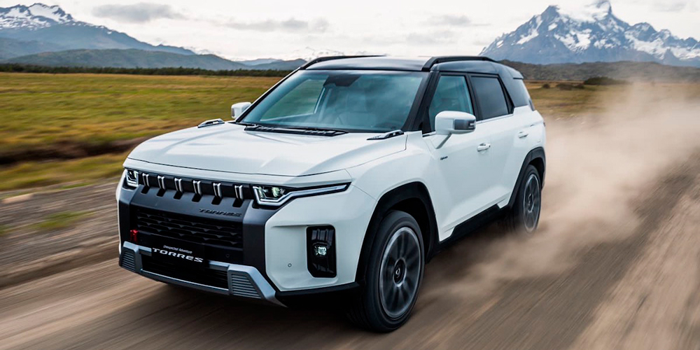
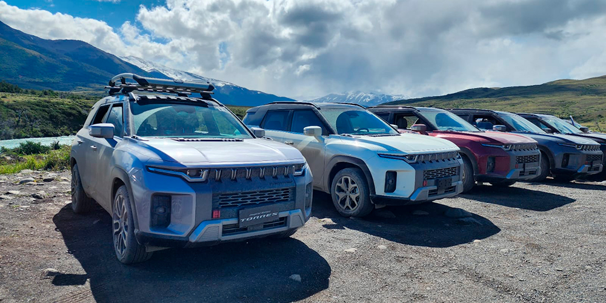

Torres
Reviews de Prensa
SsangYong Torres: el aventurero SUV de los coreanos anuncia su llegada al país
La última creación de la firma coreana debutará en Chile en diciembre próximo. Así se acaba de anunciar en un evento...
Ver publicación

SsangYong Torres: el SUV de la firma coreana inspirado en Chile
Torres es el nombre nuevo modelo de SsangYong. Inspirado en tierras chilenas, el SUV de la firma coreana tomó...
Ver publicación

SsangYong presenta su nuevo SUV en las Torres del Paine
Se estrena el modelo Torres inspirado en esta reserva natural de la Patagonia chilena
Ver publicación
SsangYong Torres, el SUV inspirado en Chile que quiere conquistar a los usuarios off-road
La marca coreana estrena un robusto SUV que busca capitalizar la mayor demanda de todoterrenos más capaces.
Ver publicaciónSsangYong Torres llega preparado para la aventura
El nuevo todoterreno se presenta en nuestro país con 4 versiones que comparten el motor 1.5...
Ver publicación